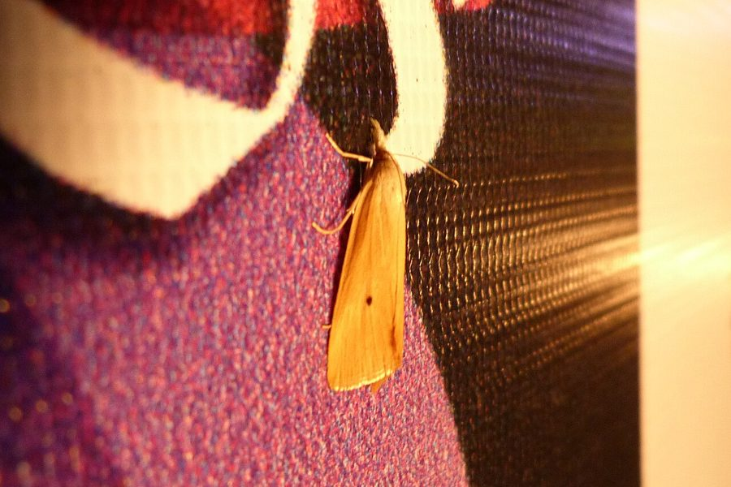

पीला तनाछेदकYellow Stem Borer
Scirpophaga incertulas · Crambidae · INS-0041

- Scientific name
- Scirpophaga incertulas Walker, 1863
- Family
- Crambidae
- Hindi
- पीला तनाछेदक
- Status here
- native
- IUCN
- not evaluated
When to look कब देखें
Expected mainly in July, August, September, October, November.
पीला तनाछेदक / Yellow Stem Borer
Scirpophaga incertulas Walker, 1863 — Crambidae
पीला तनाछेदक — पूर्वी उत्तर प्रदेश के धान उत्पादक क्षेत्रों में पाया जाने वाला सबसे विनाशकारी और आर्थिक रूप से महत्वपूर्ण हानिकारक कीट है। यह मुख्य रूप से धान (rice) की फसल को अपना शिकार बनाता है। इसका वयस्क पतंगा हल्के पीले-सफ़ेद रंग का होता है जिसके अगले पंखों पर एक छोटा, स्पष्ट काला धब्बा (black spot on forewing) होता है। इसकी इल्ली (caterpillar) धान के तने के भीतर छेद करके अंदर घुस जाती है और भीतरी कोमल भागों को खाती है। इसके हमले के कारण पौधे की प्रारंभिक अवस्था में 'डेड हार्ट' (dead heart - तने का सूखना) और फूल आने की अवस्था में 'व्हाइट ईयर' (white ear - सफेद और खाली बालियाँ) की समस्या पैदा होती है, जिससे प्रभावित तने में धान के दाने बिल्कुल नहीं बनते। यह पूर्वी उत्तर प्रदेश के किसानों के लिए फसल क्षति का एक बहुत बड़ा कारण है।
Quick Identification त्वरित पहचान
| Feature | Description |
|---|---|
| Adult Female | Bright yellowish-white forewings, each marked with a single distinct black spot in the center; hindwings are pure white |
| Adult Male | Slightly smaller and darker than the female; forewings are light brown-yellow with a series of tiny grey dots on the margin |
| Larval Stage | Smooth, dirty white to pale yellow caterpillar with a dark brown head capsule; length up to 25 mm |
| Damage (Early) | "Dead heart" — central leaf whorl of the vegetative tiller turns brown, dries up, and can be easily pulled out |
| Damage (Late) | "White ear" or "white head" — empty, bleached white panicles that stand upright without seeds |
Field tip: Inspect paddy fields during the monsoon. Look for white, empty, seedless panicles standing straight up in the crop canopy. Pull gently on these white heads; if they pull out easily with a rotted base, it is stem borer damage. During the evening, check leaves for adult moths with single black dots on their wings. The female is shown in the field tip.
Morphology आकारिकी
Biometrics (typical measurements in the northern Indian plains):
| Stage / Part | Measurement |
|---|---|
| Adult female length | 15–18 mm |
| Adult male length | 13–15 mm |
| Adult wingspan (female) | 28–33 mm |
| Adult wingspan (male) | 22–25 mm |
| Mature larval length | 20–25 mm |
| Egg mass size | 100–150 eggs |
| Pupal length | 12–15 mm |
Adult Moth: The female moth has warm ochre-yellow to straw-coloured forewings, displaying a single diagnostic black dot in the center of each wing. The hindwings are silky white. The male moth is smaller, duller greyish-yellow, with faint brown streaks on the wings and lacking the distinct single black dot (or showing only a tiny speck). The antennae are short and thread-like.
Egg: Oval, flat, laid in groups or masses, covered with buff-coloured hairy scales from the female's anal tuft.
Pupa: Pale yellowish-white, turning reddish-brown before emergence, enclosed inside a thin silken cocoon within the rice stem.
Larval Stage
The larva goes through five instars, spending almost its entire life inside the host stem.
- Newly hatched larva: Tiny (1.5 mm), pale grey-white with a black head. It crawls up the plant or hangs by a silk thread, dispersing to adjacent tillers.
- Mature larva: Reaches 20–25 mm in length. The body is smooth, cylindrical, dirty white to light yellow, with a dark brown head and a yellow-brown prothoracic shield (neck plate).
Behaviour & Ecology व्यवहार और पारिस्थितिकी
- Strict host specificity: Unlike the polyphagous cutworm, Scirpophaga incertulas is monophagous, feeding exclusively on rice (Oryza sativa) and a few wild riverine grasses.
- Internal boring: Once the newly hatched larva finds a rice stem, it eats through the outer layer and crawls inside within 24 hours. The rest of its larval life is spent protected inside the hollow stem, away from chemical sprays and birds.
- Phototaxis: Adult moths are highly attracted to light. They fly mainly at night, mating and laying eggs under the cover of darkness.
Life Cycle / Phenology जीवन चक्र
- Reproduction: Produces 3 to 5 generations during the crop cycle in UP, depending on temperature and irrigation.
- Oviposition: Females lay egg masses containing 100–150 eggs on the upper side of young rice leaves, covering them with brown hair.
- Developmental times (during monsoon crops at 28–32°C):
- Egg incubation: 6 to 9 days.
- Larval period: 30 to 40 days, feeding inside the stem.
- Pupation: The mature larva eats an exit hole in the stem base just above the water level, covers it with a silk web, and pupates inside the base. The pupal stage lasts 7 to 10 days.
- Adult lifespan: 4 to 6 days.
Host Plants or Prey आहार
Primary host plant:
- Cultivated crop: Rice (Oryza sativa), including local varieties (such as Kalanamak rice in the adjacent Siddharthnagar/Basti belt) and hybrid paddy.
- Wild hosts: Riverine wild rice (Oryza rufipogon) and common marsh reeds (Phragmites karka).
Predators / Natural Enemies शत्रु
- Parasitoids: Small wasps (like Tetrastichus schoenobii and Telenomus species) parasitize the egg masses, reducing larvae emergence.
- Predators: Dragonflies (like the Scarlet Skimmer Crocothemis servilia), damselflies, Skipper Frogs (Euphlyctis cyanophlyctis), and insectivorous birds (like the Plain Prinia Prinia inornata) capture flying adult moths.
- Spiders: Long-jawed orb-weavers (Tetragnatha mandibulata) spin webs over rice fields, catching emerging moths.
Agricultural / Human Relevance कृषि प्रासंगिकता
Major agricultural threat. The Yellow Stem Borer is the most feared insect pest among rice farmers in Basti. An infestation during the panicle stage can destroy 20–50% of the rice crop, leading to severe economic losses.
Control methods: Farmers in Basti use several management strategies:
- Cultural control: Clipping leaf tips of young seedlings before transplanting to remove egg masses. Harvesting the crop close to the ground to destroy larvae inside the stubble.
- Pheromone traps: Setting up female sex pheromone traps to capture male moths and disrupt mating.
- Chemical control: Applying systemic granular insecticides in the soil (like cartap hydrochloride or fipronil) which are absorbed by the roots and travel up the stem to kill internal larvae.
Expected Locally स्थानीय रूप से अपेक्षित
Not a field record. Written from published accounts for eastern Uttar Pradesh. No confirmed local sighting yet — if you have seen it, that is what the atlas needs.
अभी तक स्थानीय पुष्टि नहीं। यह विवरण प्रकाशित स्रोतों से है, किसी अवलोकन से नहीं।
A common pest throughout the Basti district, especially in the low-lying, clay-rich rice basins (tarai margins) of the Harraiya and Basti blocks. Heavy infestations are regularly observed during the late Kharif crop phase (September to October). Farmers report that fields near water canals show higher damage due to wet conditions.
Distribution वितरण
Global range: Widespread across South Asia, Southeast Asia, East Asia, and parts of the Middle East.
In India: Abundant in all major rice-growing plains, particularly in the northern and eastern plains.
In Uttar Pradesh: A major pest in all paddy-growing districts.
In Basti district / eastern UP: Widespread across all blocks.
Research Questions शोध प्रश्न
Anyone can investigate these | कोई भी इन प्रश्नों की जाँच कर सकता है
- What is the percentage of "white ears" in a local Basti paddy field that has been treated with chemical granules versus an untreated organic plot? — Conduct crop damage counts.
- Do Yellow Stem Borer moths show a higher attraction to blue-light traps versus yellow-light traps in your block? / क्या पीला तनाछेदक पतंगा पीले प्रकाश प्रपंच की तुलना में नीले प्रकाश प्रपंच की ओर अधिक आकर्षित होता है? — Run comparison trap trials.
- What percentage of egg masses collected from a local paddy field are parasitized by natural wasps? — Incubate collected egg masses in jars and count emerging wasps.
- How does the damage level of stem borers change in fields harvested at ground level versus those harvested by machine (leaving tall stubble)? — Survey winter fields.
- Does the native Kalanamak rice variety show higher resistance to Yellow Stem Borer compared to hybrid rice varieties in Basti? / क्या बस्ती की पारंपरिक 'काला नमक' धान की किस्म हाइब्रिड धान की तुलना में पीले तनाछेदक के प्रति अधिक प्रतिरोधी है? — Conduct comparative damage surveys.
Similar Species मिलती-जुलती प्रजातियाँ
| Species | How to tell apart | हिंदी |
|---|---|---|
| Tobacco Cutworm (Spodoptera litura) | Moth is grey-brown with complex patterns; caterpillars are dark and feed externally on leaves at night | सेना पतंगा — धूसर पतंगा, इल्ली पत्ते खाती है |
| Pink Stem Borer (Sesamia inferens) | Moth is pink-brown; larva is pinkish-purple and attacks maize and wheat as well as rice | गुलाबी तनाछेदक — गुलाबी पतंगा, बहुभक्षी |
| Rice Leaf Folder (Cnaphalocrocis medinalis) | Moth is yellowish-brown with dark bands; larva rolls leaves and feeds within | पत्ती लपेटक — पत्ते लपेटने वाली इल्ली |
Field rule: Bright yellowish-white moth with a single black dot on each forewing (female), whose caterpillars bore inside rice stems causing "dead hearts" or empty "white ears", is the Yellow Stem Borer.
Taxonomy & Classification वर्गीकरण
Original description. Francis Walker described the Yellow Stem Borer as Tipanaea incertulas in 1863 in his List of the Specimens of Lepidopterous Insects in the Collection of the British Museum (Part 28, p. 523). The type locality was Sarawak, Borneo. It was later placed in the genus Scirpophaga by Hampson. The genus name Scirpophaga comes from the Greek skirpos (rush/reed) and phagos (eater), referencing the larval habit of boring into reeds. The specific name incertulas is Latin for uncertain or doubtful.
Subspecies. Monotypic — no subspecies are currently recognised.
Family and order placement. Placed in the order Lepidoptera, superfamily Pyraloidea, family Crambidae (grass moths), subfamily Schoenobiinae.
Phylogenetic notes. Scirpophaga incertulas belongs to a group of specialized wetland stem-boring moths, showing close genetic links to the White Stem Borer (Scirpophaga innotata).
IUCN status rationale. Not evaluated (NE) by the IUCN Red List. It is a highly common and secure agricultural pest.
Photo Gallery फोटो गैलरी
References संदर्भ
- Walker, F. (1863). List of the Specimens of Lepidopterous Insects in the Collection of the British Museum. Part 28, p. 523. London. [original description]
- Atwal, A. S. & Dhaliwal, G. S. (2015). Agricultural Pests of South Asia and Their Management. Kalyani Publishers, New Delhi.
- Pathak, M. D. & Khan, Z. R. (1994). Insect Pests of Rice. International Rice Research Institute, Manila.
- David, B. V. & Ramamurthy, V. V. (2016). Elements of Economic Entomology. Namrutha Publications, Chennai.
- CABI Crop Protection Compendium (2024). Scirpophaga incertulas (yellow stem borer) datasheet.
- GBIF Occurrence Data — Scirpophaga incertulas, Uttar Pradesh (2010–2025).
Source file: species/fauna/insects/yellow_stem_borer.md